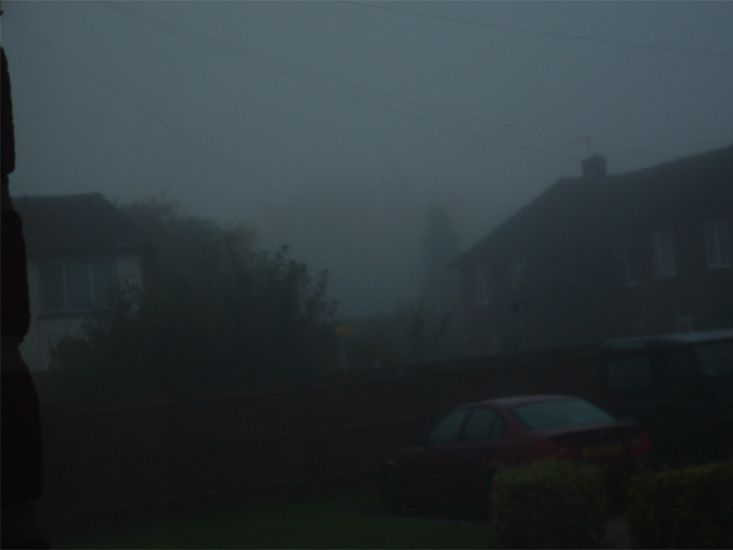
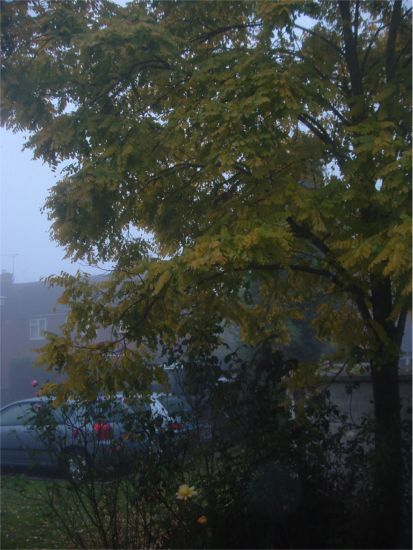
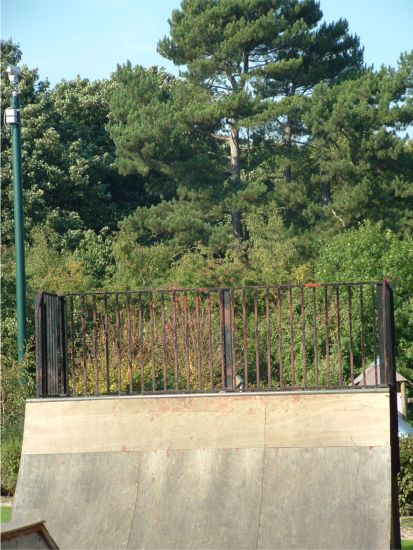
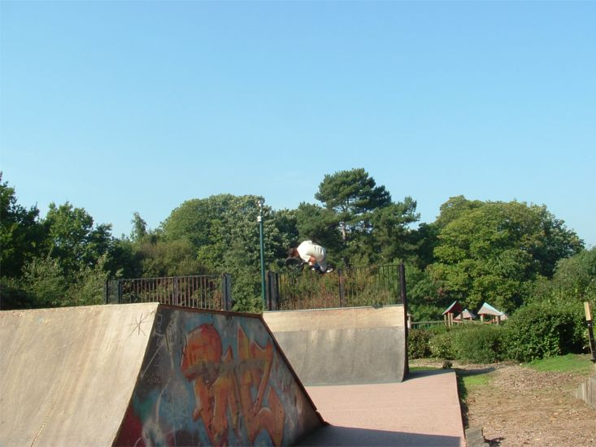
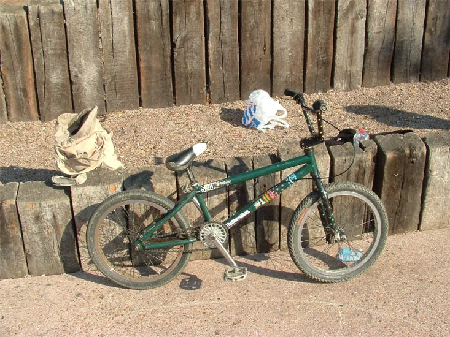
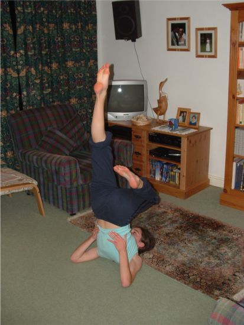
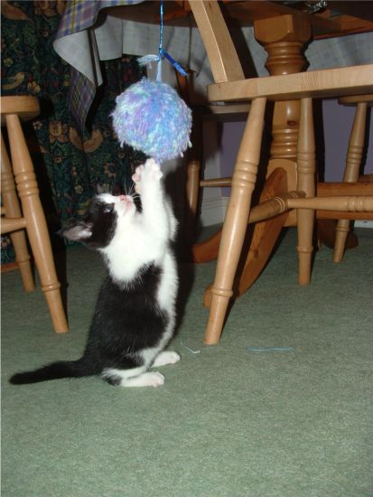

It's too late to do a good update today. I am very tired so I'd thought I'd show you how easy it is to make a website. It's 23:04 and the computer is just saving the pictures off the camera. I'll just go and edit them.
Ok that's done. It's 23:08. Eating coco pops slowed me down. Here are some pictures I took on the 10th October 2005:

At the moment every day starts like this.

Misty morn.

But then it turns into a nice day like this. I was overheating today. People at the skatepark were complaining about the heat.



Phebe (my sister) got me to go and take pictures of her doing gymnastics for school.

They have a new kitten (Tim, Phebe and my mum). They get a new cat about once a year. After about 9 months it runs away so a few months later they get a new one. I think it works out well as they are best when they are kittens.
All done. It's 23:12. Just got to upload it. Ok all that's done. 23:14. 10 minutes. Go and make a website.